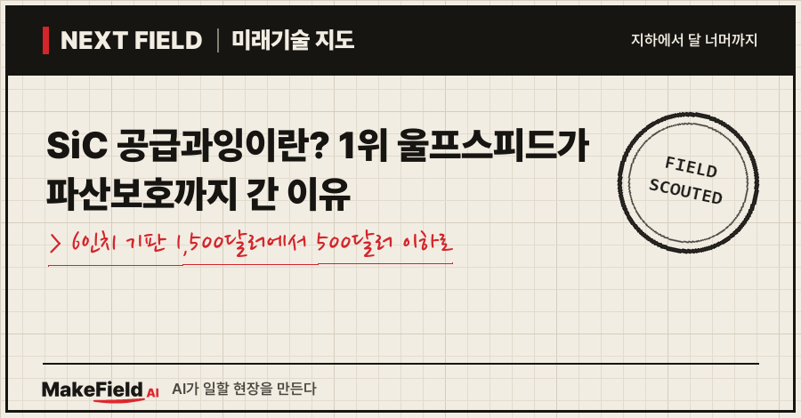
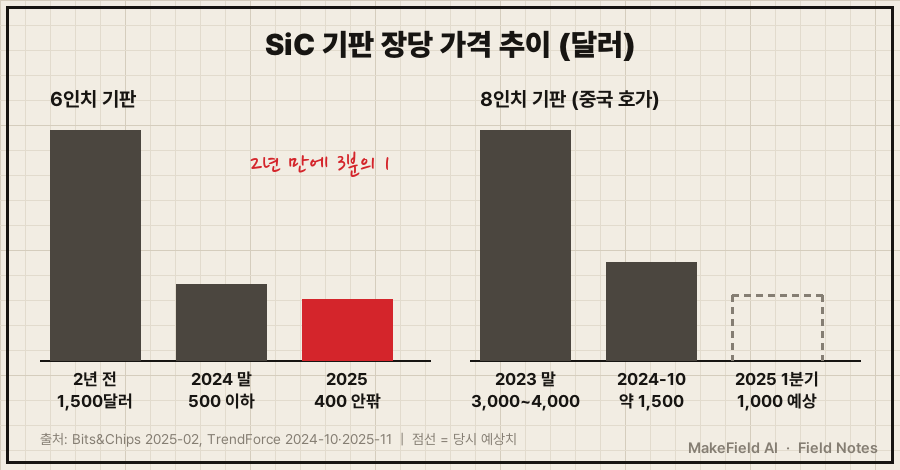
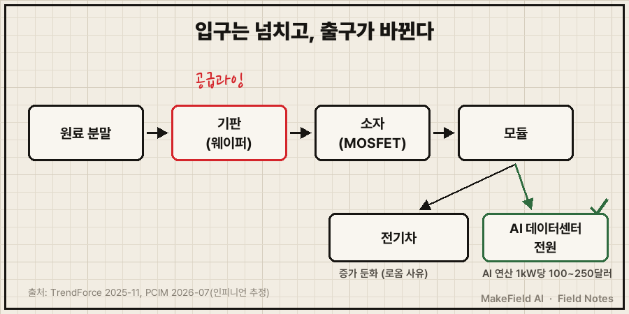
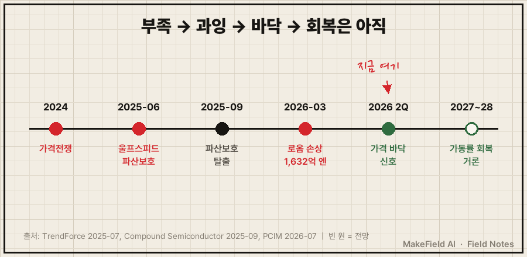

한 줄 요약: 6인치 SiC(탄화규소) 기판 값은 2년 만에 장당 약 1,500달러에서 500달러 이하로 떨어졌고(Bits&Chips 2025-02), 세계 기판 점유율 1위(2024년 34%) 울프스피드는 2025년 6월 미국 파산보호를 신청했어요(TrendForce 2025-07). "SiC가 모자란다"던 몇 년 전 이야기가 뒤집혀, 지금은 SiC 공급과잉과 가격전쟁이 이 시장의 출발점입니다.
💡 SiC(탄화규소) — 규소(실리콘)와 탄소를 결합한 반도체 재료. 일반 실리콘보다 높은 전압·온도를 견디고 전기 손실이 적어 전기차·고전력 전원에 쓴다.
전기차 붐 때 SiC는 '없어서 못 파는 소재'로 불렸어요. 그런데 2024~2026년 뉴스는 정반대입니다. 1위 기업의 파산보호, 일본 대기업의 1,600억 엔대 손상차손, 중국발 증설. 동시에 AI 데이터센터라는 새 수요가 고개를 들고 있어요. SiC 공급과잉이 왜 생겼고, 돈은 지금 어디로 흐르는지 2026년 10월 기준으로 풀어 볼게요.
1. SiC 전력반도체란 무엇인가요
SiC 전력반도체란 전기를 켜고 끄고 바꾸는 반도체 스위치를 탄화규소로 만든 것이다. 국내 증권가 분석을 인용한 보도에 따르면 SiC는 실리콘보다 전력 손실이 약 30% 적어요(뉴데일리 2026-04). 전기차의 모터 구동 장치(인버터), 급속 충전기, 데이터센터 전원 장치에 들어갑니다.
💡 전력반도체 — 전기의 흐름을 켜고 끄고, 교류↔직류로 바꾸고, 전압을 조절하는 반도체. 집 안의 두꺼비집·변압기가 하던 일을 칩이 아주 빠르게 해낸다고 보면 된다.
SiC 칩은 세 단계를 거쳐 만들어져요.
| 단계 | 무엇을 만드나 | 쉬운 비유 |
|---|---|---|
| 기판(웨이퍼) | SiC 결정을 키워 얇게 자른 원판 | 빵을 굽기 전 반죽 판 |
| 소자 | 기판 위에 회로를 새긴 스위치 칩(MOSFET 등) | 판 위에 찍어 낸 쿠키 |
| 모듈 | 칩 여러 개를 묶어 냉각·배선을 붙인 부품 | 쿠키를 담은 선물 상자 |
💡 기판(substrate)·웨이퍼 — 칩을 새기는 얇은 원판. 6인치·8인치는 지름(약 15cm·20cm)이고, 클수록 한 장에서 칩이 많이 나와 칩 한 개 값이 싸진다.
💡 MOSFET — 전기를 켜고 끄는 반도체 스위치. SiC MOSFET은 고전압 인버터·전원 장치의 핵심 부품이다.
2. 왜 SiC 공급과잉이 생겼나요
기판 공장이 수요보다 빨리 늘었고, 전기차 수요 증가는 기대보다 느렸기 때문이다. 가격 그래프가 이걸 그대로 보여 줘요.
| 품목 | 시점 | 장당 가격 | 출처 |
|---|---|---|---|
| 6인치 기판 | 약 2년 전 → 2025년 초 | 약 1,500달러 → 500달러 이하 | Bits&Chips 2025-02(독일 장비업체 영업담당자 증언) |
| 6인치 기판 | 2024년 중반~4분기 | 500달러 아래로, 20% 이상 하락 | TrendForce 2025-11 |
| 6인치 기판 | 2025년 | 주류 호가 400달러 안팎 이하 | TrendForce 2025-11 |
| 8인치 기판(중국 호가) | 2023년 말 → 2024년 10월 | 3,000~4,000달러 → 약 1,500달러 | TrendForce 2024-10 |
| 8인치 기판(중국 호가) | 2025년 1분기 | 약 1,000달러(당시 예상치) | TrendForce 2024-10 |
TrendForce는 "주요 공급사의 빠른 증설이 공급과잉을 낳아 기판 가격을 끌어내렸다"고 정리했고, 일부 업체는 원가에 가까운 값을 부르며 업계 재편이 빨라지고 있다고 봤어요(TrendForce 2025-11).

무게중심이 6인치에서 8인치로 넘어가는 것도 압력이에요. 지름이 큰 8인치는 한 장에서 칩이 더 많이 나와요. ST마이크로와 중국 산안광전의 합작사는 연 약 48만 장(8인치) 규모 생산능력을 짓고 있고, 중국 SICC는 2026년 전략의 초점을 8인치 기판 증설에 맞췄습니다(LEDinside 2026-03). 새 설비가 쏟아지면 옛 6인치 설비의 값어치는 더 떨어집니다.
3. 울프스피드 파산보호와 로옴 손상차손 — 누가 손해를 봤나요
가격전쟁의 비용은 먼저 크게 투자한 회사가 치렀다. 대표적인 두 사례가 있어요.
울프스피드(미국) — 2024년 세계 SiC 기판 점유율 34%로 1위였고, 중국 TankeBlue·SICC가 각각 17%로 뒤를 이었어요(TrendForce 2025-07). 울프스피드는 2025년 6월 30일 파산보호(Chapter 11) 신청을 발표했고, 이 절차로 총부채를 약 70%(약 46억 달러) 줄이는 계획을 내놨습니다(TrendForce 2025-07). 2025년 9월 29일 구조조정을 마치고 파산보호에서 벗어났어요(Compound Semiconductor 2025-09). 이후 더럼의 6인치 공장을 예정보다 한 달 일찍 닫고 8인치 공장에 집중하고 있습니다(LEDinside 2026-03).
💡 Chapter 11(파산보호) — 회사를 청산하지 않고 법원 감독 아래 빚을 조정하며 영업을 이어 가게 하는 미국 제도.
로옴(일본) — 2026년 3월 끝난 회계연도에 SiC 자산 손상차손 1,632억 엔과 순손실 1,584억 엔을 기록했어요. 회사가 든 이유는 전기차 증가 둔화, 중국 경쟁, 6인치 기판 공급과잉이었습니다(PCIM 2026-07).
💡 손상차손 — 사 둔 설비·자산의 가치가 떨어졌다고 장부에서 깎는 회계 처리. "이 투자가 기대만큼 돈을 벌지 못한다"는 공식 고백이다.
4. 돈의 흐름 — 그럼 돈은 이제 어디로 가나요
수요의 무게중심이 전기차에서 AI 데이터센터 전원으로 옮겨 가고 있다. 2026년 7월 PCIM 업계 정리 기사에 이 흐름이 숫자로 나와요.
- 인피니언(독일)은 AI 데이터센터 전원 매출 목표를 이번 회계연도 15억 유로, 2027 회계연도 25억 유로로 제시했어요. 설치된 AI 연산 1kW당 전력반도체가 100~250달러어치 들어간다고 보고, 2030년 해당 시장을 80억~120억 유로로 추정합니다(PCIM 2026-07 — 회사 추정).
- 시장조사기관 Yole는 전력용 SiC 소자 시장이 2031년 110억 달러(연 20% 성장)에 이른다고 보고, 새 동력으로 3kW 이상 전원 장치와 AI 데이터센터의 800V 직류 배전을 꼽았어요(PCIM 2026-07 — 시장조사 추정).
- 울프스피드도 AI 데이터센터 매출이 직전 분기보다 약 30% 늘었다고 밝혔는데, 기사는 "작은 출발점에서"라는 단서를 달았습니다(PCIM 2026-07).
💡 800V 직류 배전 — 데이터센터 안에서 전기를 교류 대신 높은 전압의 직류로 나눠 보내는 방식. 변환 단계가 줄어 손실이 적다. 이 고전압 변환에 SiC 같은 전력반도체가 들어간다.
| 구간 | 누가 파나(예시) | 누가 사나 | 지금 상황 |
|---|---|---|---|
| 기판 | 울프스피드, SICC, TankeBlue | 소자 회사 | 공급과잉·가격전쟁 |
| 소자·모듈 | 인피니언, ST마이크로, 로옴, 보쉬 | 전기차·충전기·전원 장치 회사 | 6인치→8인치 전환 |
| 최종 수요 | 전기차, AI 데이터센터 전원 | 완성차·데이터센터 운영사 | 무게중심이 AI 전원 쪽으로 이동 |

한국도 이 구간에 돈을 넣고 있어요. 정부는 2025~2031년 화합물 반도체에 2,601억 원을 투자하고, 부산에 8인치 SiC 공공 팹(2024~2028년, 400억 원)을 만들 계획입니다(뉴데일리 2026-04). 같은 기사가 인용한 유안타증권 전망은 SiC 전력반도체 시장이 2025년 40.2억 달러에서 2034년 186.1억 달러로 커진다는 것이에요(증권사 추정). 미국에서는 보쉬가 캘리포니아 로즈빌 공장을 8인치 SiC로 바꾸는 데 칩스법 지원금 2억 2,500만 달러를 확정했습니다(PCIM 2026-07).
※ 위 기업명과 시장 전망치는 산업 구조를 설명하기 위한 예시입니다. 특정 종목의 매수·매도를 권하는 글이 아닙니다.
5. SiC 공급과잉은 언제 끝나나요 — 한계와 반대 근거
가격은 바닥 신호가 나왔지만, 공장이 다시 꽉 차게 돌기까지는 2027~2028년이 거론된다. 낙관과 비관을 함께 봐야 해요.
- 바닥 신호: 6인치 기판 가격이 바닥을 찍고 회복을 시작했고, 유통업체들은 "2년간의 가격전쟁 뒤 공급이 빠듯해졌다"고 말했어요(PCIM 2026-07).
- 가동률은 아직 낮다: 같은 기사는 전력반도체 수요가 회복되고 있지만 업계 설비는 2027~2028년까지 완전 가동에 못 미친다고 봤습니다(PCIM 2026-07).
- 8인치 증설이 또 온다: 2026년을 8인치 대량생산의 분기점으로 보는 시각이 있고, 수율과 원가 관리가 승부처로 꼽혀요(LEDinside 2026-03). 새 8인치 설비가 한꺼번에 돌면 과잉이 형태만 바꿔 이어질 수 있습니다(추정).
- AI 수요는 아직 작다: 울프스피드의 AI 매출 증가도 "작은 출발점에서"였어요(PCIM 2026-07). 인피니언·Yole 숫자는 회사·조사기관 전망이라 실제 주문과는 다를 수 있습니다.
- 원료 쪽 변수: 함께 쓰이는 차세대 소재 GaN의 원료 갈륨은 중국의 대미 수출 금지 유예가 2026년 11월 끝나요(PCIM 2026-07). SiC와는 다른 공급망이지만 전력반도체 전체의 일정표에 같이 올라 있는 날짜입니다.

정리하면 SiC는 '부족(전기차 붐 시기) → 증설 → 공급과잉·가격전쟁(2024~2025) → 구조조정 → 바닥 신호(2026)' 순서를 밟고 있어요. 다음 확인 지점은 8인치 공장들이 실제로 얼마나 빨리 수율을 올리느냐, 그리고 AI 데이터센터 전원 주문이 전망만큼 늘어나느냐입니다.
자주 묻는 질문
Q. SiC 공급과잉이면 전기차 값도 내려가나요?
기판 값이 내리면 칩·모듈 원가가 내려갈 여지는 생겨요. 다만 기판은 차량 전체 원가 중 일부이고, 그 인하분이 차 값에 얼마나 반영될지는 확인된 자료가 없습니다. 이 글에서는 단정하지 않을게요.
Q. 울프스피드는 망한 건가요?
아니에요. 파산보호는 청산이 아니라 빚을 조정하며 영업을 이어 가는 절차예요. 울프스피드는 부채를 약 70% 줄이는 구조조정 뒤 2025년 9월 29일 파산보호에서 벗어났고(Compound Semiconductor 2025-09), 2026년에는 8인치 공장에 집중하고 있어요(LEDinside 2026-03).
Q. SiC와 GaN은 경쟁 관계인가요?
둘 다 실리콘을 넘는 차세대 전력반도체 소재로 꼽혀요(뉴데일리 2026-04). 같은 기사는 GaN이 고속 충전기와 AI 서버 전원에 쓰인다고 소개했고, SiC는 이 글에서 본 것처럼 전기차 인버터와 800V 직류 배전 쪽 수요가 크다는 전망이 나옵니다(PCIM 2026-07). 어느 한쪽이 다른 쪽을 대체한다기보다 쓰이는 자리가 다르다고 보는 편이 정확해요.
오늘의 용어 정리
- SiC(탄화규소) — 고전압·고온에 강하고 손실이 적은 차세대 반도체 재료
- 전력반도체 — 전기를 켜고 끄고 바꾸는 반도체
- 기판(웨이퍼) — 칩을 새기는 원판, 6인치·8인치는 지름
- MOSFET — 전기를 켜고 끄는 반도체 스위치
- Chapter 11(파산보호) — 빚을 조정하며 영업을 이어 가는 미국 제도
- 손상차손 — 자산 가치 하락분을 장부에서 깎는 회계 처리
- 800V 직류 배전 — 데이터센터 안에서 고전압 직류로 전기를 나눠 보내는 방식
지난 Next Field에서 엔비디아가 바꾸는 800V 직류 데이터센터를 다뤘는데, 그 배선 속 스위치가 바로 오늘의 SiC예요. 여러분은 AI 데이터센터 수요가 이 공급과잉을 2027년 안에 흡수할 거라고 보시나요, 아니면 8인치 증설이 또 한 번 가격을 누를 거라고 보시나요?
출처
[1] Bits&Chips(2025-02) — 독일 반도체 장비업체 영업담당자 증언: 6인치 SiC 웨이퍼 값 2년 만에 장당 1,500달러에서 500달러 이하로
→ https://bits-chips.com/?p=217073
[2] TrendForce(2024-10) — 6인치 기판 공급과잉, 8인치 기판 중국 호가 2023년 말 3,000~4,000달러 → 약 1,500달러, 2025년 1분기 약 1,000달러 예상
→ https://www.trendforce.com/news/2024/10/23/news-oversupply-of-6-inch-sic-substrate-leading-to-price-decline/
[3] TrendForce(2025-11) — 6인치 기판 가격전쟁, 2024년 중반~4분기 500달러 아래로 20% 이상 하락, 2025년 주류 호가 400달러 안팎 이하, 원가 근접 가격과 업계 재편
→ https://www.trendforce.com/news/2025/11/26/news-sic-raw-materials-see-a-price-increase-while-6-inch-substrate-kicks-off-a-price-war/
[4] TrendForce(2025-07) — 울프스피드 2025-06-30 파산보호 발표, 총부채 약 70%(46억 달러) 감축 계획, 2024년 기판 점유율 울프스피드 34%·TankeBlue 17%·SICC 17%
→ https://www.trendforce.com/news/2025/07/01/news-wolfspeed-remains-operational-during-bankruptcy-targets-q3-2025-exit-next-moves-and-challenges-ahead/
[5] Compound Semiconductor(2025-09) — 울프스피드 2025-09-29 구조조정 완료·파산보호 탈출
→ https://compoundsemiconductor.net/article/122600/Wolfspeed_emerges_from_Chapter_11
[6] PCIM 업계 동향(2026-07) — 로옴 SiC 손상차손 1,632억 엔·순손실 1,584억 엔과 사유, 인피니언 AI 데이터센터 전원 매출 목표·1kW당 100~250달러·2030 시장 추정, Yole 2031년 110억 달러 전망, 보쉬 칩스법 2억 2,500만 달러, 6인치 가격 바닥·가동률 2027~2028, 울프스피드 AI 매출, 갈륨 유예 11월 만료
→ https://news.pcim.mesago.com/chip-industry-update-q2-2026-memory-goes-on-allocation-as-power-demand-turns-a-e3308ffe6643ec4dcfcd9c9b8d16a39a/
[7] LEDinside(2026-03) — ST–산안 합작 연 약 48만 장(8인치), SICC 8인치 증설 집중, 울프스피드 6인치 더럼 공장 조기 폐쇄·8인치 집중, 2026년 8인치 대량생산 분기점
→ https://www.ledinside.com/node/35905
[8] 뉴데일리(2026-04) — SiC 전력 손실 실리콘 대비 약 30% 적음, 유안타증권 SiC 시장 2025년 40.2억 → 2034년 186.1억 달러 전망, 정부 화합물 반도체 2,601억 원·부산 8인치 SiC 공공 팹 400억 원
→ https://biz.newdaily.co.kr/site/data/html/2026/04/01/2026040100162.html